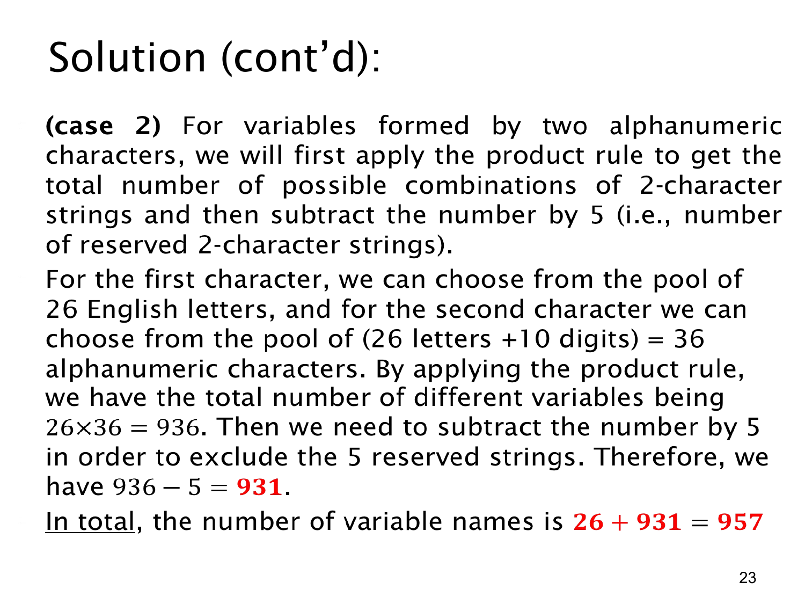

课件第 23 页讲解原文
查看这一页课件

两字符变量名：相乘后排除保留字
本页计算长度为 2 的变量名，再与单字符情况合并。
先暂时忽略保留字，把两个位置写成“首字符、第二字符”。首字符必须是英文字母，有 26 种选择。第二字符可以是 26 个字母之一，也可以是 10 个数字之一，所以有 26+10=36 种选择。
字母与数字这两个字符类别没有重叠，因此 36 的来源本身是一次加法法则。两个位置都需要填好，因而它们之间使用乘法法则：
26×36=936.
这个 936 包含所有结构合法的两字符名字，也包含题目禁止使用的 5 个保留字。每个保留字是一个完整名字，扣除一次即可：
936−5=931.
不能在每个首字符下都扣 5，即不能写成 26(36−5)；题目说整个语言总共禁用了 5 个字符串，并没有说每个首字母各自禁用 5 个。
最后，长度为 1 的合法名字有 26 个，长度为 2 的有 931 个。两类互不重叠，所以总数是：
26+931=957.
整个计算顺序可以直接对应题目的限制：先按长度分开；在两字符这一类中按位置构造；再排除保留字；最后合并两种长度。这样每一个加号、乘号和减号都有明确的计数含义。